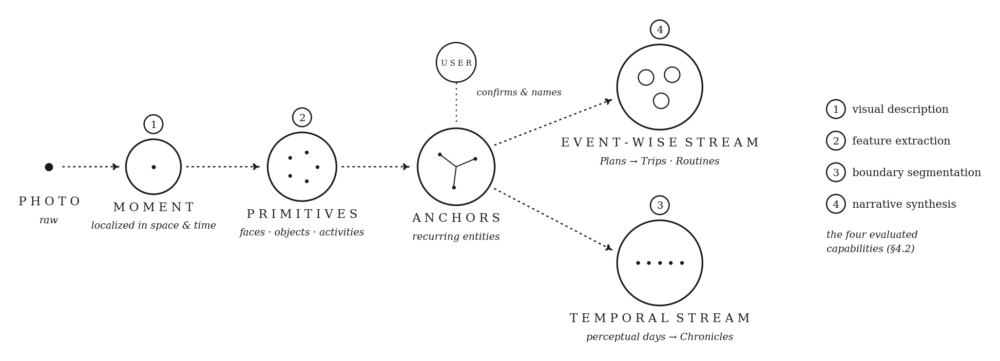
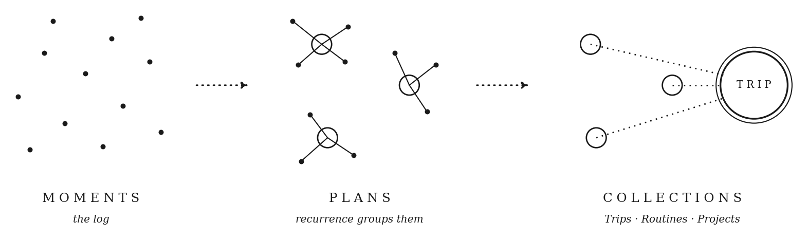

1Introduction
The field treats memory as an application problem: a feature bolted onto an agent, solved by storing more observations and retrieving them more effectively (Lewis et al., 2020; Packer et al., 2023). Architectures built this way converge on retrieval. Retrieval answers what happened. It does not answer what it means or what comes next, and the meaning an agent needs is often not a property of any single memory. Whether a dinner is a weekly routine or a one-off is a fact about recurrence across the whole archive; it exists in no retrievable fragment, and no amount of better search over fragments will surface it. Search over the raw archive re-derives this understanding on every query and discards it. A memory system should compute it once and keep it.
Without persistent memory, a system cannot accumulate experience: each interaction starts from zero, with no ability to build context, recognize recurring patterns, or maintain a stable model of its world (Conway & Pleydell-Pearce, 2000; LeCun, 2022).
Memory is a compression problem. A memory system should progressively compress repeated experience into increasingly abstract representations, the organization long observed in human autobiographical memory (Conway, 2005), so that what persists is not an index over the past but a model of the person. We call this representation the Personal World Model (PWM). We develop it in §2, instantiate it in GOLGI over a real personal photo archive (§3), and evaluate both directions of the claim: the structure can be built at archive scale, on-device (§4.1–4.2); an agent reading it outperforms one searching the raw archive, and the benefit tracks the structure's fidelity (§4.3); and the same structure anticipates moments it never observed (§4.4).
When memory is structured, context emerges.
2Personal World Model
2.1A Map of a Life
We see and understand the world through a map of our memories: a personal world model (Figure 1). A map is reductive by design: it compresses space, time, and the relationships within them into a representation that supports navigation and prediction. Compression is also what makes a map transferable. An agent that has never entered the territory can read it and act in it, because the map carries the structure of the territory without the experience of it. A personal world model is a map of a life: a compressed, persistent representation that any model can read, navigate, and anticipate from, without access to the experience that produced it.
Spatiotemporal structure is not incidental to this compression; it is its substrate. In the brain, the memory system is built atop the navigation system: episodic memory reuses the machinery that maps space (Moser et al., 2015). Frontier accounts of machine intelligence make the parallel wager: spatiotemporal awareness is a seed of general intelligence, and to reason about a world a model must think in units of space and time (Li, 2025).
Think of two people you know: one closely, one barely. You can guess where the first is right now and what they are probably doing; the second you cannot. The difference is not memory alone. It is the model you have built of them.
2.2Earned by Recurrence
Where the map compresses reality, recurrence gives it structure. A single dinner is an event. A dinner that recurs week after week becomes a routine: an abstraction earned only when enough instances accumulate to make the pattern visible. Higher structure forms the same way: events consolidate into routines, routines reveal relationships, relationships settle into a stable sense of who we are. Abstraction earned by repetition is what the consolidation literature describes: in complementary-learning-systems accounts, slow cortical learning extracts statistical structure from episodes replayed over time (McClelland et al., 1995; Kumaran et al., 2016), and Conway's Self-Memory System organizes autobiographical memory into just such a hierarchy (Conway & Pleydell-Pearce, 2000; Conway, 2005). The exact ladder is ours; the mechanism is theirs.
The convergence with frontier world-model work is about abstraction. LeCun's JEPA (LeCun, 2022) makes the choice of representational level the central problem: it predicts in a learned space, so the model keeps only what survives at some level of abstraction. The PWM runs the same logic on a different filter (recurrence where JEPA uses predictability) and yields three levels at which a life's representations become defensible: Experience, Identity, and Worldview.
Once a pattern is committed, memory can predict what comes next, and anticipation from an internal model is precisely what defines a world model (Ha & Schmidhuber, 2018; LeCun, 2022). The same distinction is what an agent needs. Consider an agent asked to book flights for a Tuesday-to-Thursday work trip. Every week for three years, the user has dinner with their closest friend on Tuesday night, a routine that was never a calendar entry, visible only as a recurring pattern across years of photos. To flat retrieval, those three years of Tuesdays and a single dinner last March are equally relevant fragments, if either surfaces at all. A personal world model has already told them apart: the Tuesday dinner is a routine; the March dinner is a one-off. The agent books the Wednesday-morning departure, protects the dinner it was never told about, and ignores last March entirely.
We give the model a shape: three nested layers, each a further abstraction of the one beneath it: Experience, Identity, Worldview (Figure 1). The structure follows Conway's Self-Memory System, in which autobiographical memory is a hierarchy: specific moments at the base build into repeated events, then lifetime periods, then a stable sense of self (Conway & Pleydell-Pearce, 2000; Conway, 2005).
Experience is the base: a life as it happens, structured into moments and the people, places, and episodes within them: a dinner last night, a walk through a park. Identity is the core: who a person consistently is, read from thousands of accumulated moments, their routines, their relationships, the places they keep returning to. Worldview is the apex: the stable values and beliefs through which a person weighs experience, what they care about and how they judge, the frame that decides what a moment means and why the same event lands differently for someone else.
The three layers hold at once. Experience remembers. Identity recognizes the patterns. Worldview knows what they mean.
We define the Personal World Model:
a persistent model of a life that compresses experience into abstractions earned by recurrence, and anticipates what comes next.
2.3A Precursor to Universal World Models
This places the Personal World Model within a lineage now taking shape. Recent work converges on a compact definition: a world model is a compression modeling of the state-transition process of the physical world (Shanghai AI Lab, 2026), learned so that it generalizes beyond what it has observed (Ha & Schmidhuber, 2018; LeCun, 2022). That work draws a further line we stand on, separating understanding-oriented world models, which compress the structure of what was observed, from generation-oriented ones, which render plausible future states (Shanghai AI Lab, 2026); a complementary functional taxonomy sorts models by role into renderers, simulators, and planners (Li, 2026). A Personal World Model is of the understanding kind. Where a generative model dreams (rendering plausible states unbound by consistency, its power for imagining physical futures), a Personal World Model does the opposite: it compresses what actually recurred, refusing to invent, because the value of a model of a life is fidelity. Its world is a single life lived in the first person. The state that transitions is relationship: who was present, where, and how often. When the world is one's own, persistence is carried through relationships.
The same roadmap names persistent memory as a precursor to the unified, omnimodal world models it anticipates (Shanghai AI Lab, 2026): no system can model a world it cannot remember. A Personal World Model is that precursor, made concrete and made personal. It accumulates the structure of a single life until that structure can be navigated, reasoned over, and anticipated from. If the field's destination is a model that understands a world, the nearest such world, dense, recurring, and already ours, is a life.
3GOLGI
GOLGI instantiates the PWM framework: it abstracts a personal photo archive into a navigable hierarchy at ingestion time and exposes it to agents through a standard tool surface (MCP).
GOLGI is currently implemented up to the Experience layer, over a single modality: personal photos. Following the PWM's principle of abstracting knowledge through accumulated repetition, GOLGI builds the hierarchy at ingestion time (Figure 2) and exposes it through the Model Context Protocol (MCP). The distinction is when the work happens: the abstractions are computed once, at ingestion, and persisted to disk. At query time an agent does not load the archive into its context window; it reads the already-built structure on demand through MCP tools (the PDF appendix), retrieving only what a question needs.

We walk through the pipeline using one month of a user's phone photos, exported from a personal camera roll. The framework extends to other modalities (video, audio, journal entries), and the cost differs by modality. Location data is the cheapest to add: it already arrives structured, and it maps directly onto the structures GOLGI builds, since Trips and place-Anchors are defined by location to begin with. Communication data is the most valuable, because relationships largely live in it, but it raises third-party consent questions beyond those the Ethics Statement addresses for photos.
Each photo enters the system as a Moment. A vector database (LanceDB) stores its visual information and a short text description; a graph database (KùzuDB) stores the identified entities: faces, objects, activities, spaces, text. These features are Primitives, and at this stage everything is anonymous: a face is a face, a room is a room.
As Moments accumulate, patterns surface across their Primitives: the same faces keep appearing, the same places keep recurring. When a pattern accumulates enough recurrence to clear a threshold and a validation step confirms it, GOLGI promotes it to a candidate Anchor and presents it to the user for confirmation and naming. Over the month, one face becomes the user themself, two cat faces become Perseida and Borealis, and the residential space is confirmed as home. Confirmed Anchors are stored as graph nodes that hold the identity of recurring entities across the archive. This confirmation loop is the first step toward a coherence mechanism in which the system itself proposes what to confirm and what to retire, continually re-evaluating its knowledge of the person.
One abstraction layer completes the Experience layer of the PWM: the Narrative of what is happening. By this stage each Moment carries the resolved identities of the entities it contains, so Narratives are synthesized over known people and places.
GOLGI synthesizes Narratives along two parallel streams: an event-wise stream and a temporal stream:
- The event-wise stream groups Moments by what happened, clustering those that share similarity and temporal proximity into Plans: coherent episodes like a morning coffee, a hike, a dinner. Because Moments are already anchored, a Plan knows who was there and where it happened. Plans aggregate into Projects (Plans circling a goal), Trips (geographically bounded Plans), and Routines (Plans that recur).
- The temporal stream groups Moments by when they happened. It segments the archive into perceptual days (days as a person lives them) and synthesizes each one into a Chronicle: a journal-style summary of what happened. Chronicles aggregate upward into weeks, months, quarters, and years.
Every layer shares the same bi-cameral store: LanceDB, a vector database, and KùzuDB, a graph database. LanceDB holds each piece's embedded representation: its visual embedding, its textual description, and the facets that describe its vibe. KùzuDB holds the explicit entities surfaced from each piece and the relations among them. Moments, Anchors, Plans, Trips, and the rest all live across both engines, linked by a shared identifier.
4Preliminary Evaluation
We evaluate GOLGI on a real four-week photo archive: precomputing the layered structure makes archive-scale ingestion tractable where the largest query-time models are not (§4.1); the per-stage decomposition lets each model-driven stage run on-device at 4B scale, up to 82% end-to-end parity (§4.2); an agent over the structure more than doubles a matched flat-retrieval baseline, with a corruption test showing the benefit tracks structural fidelity (§4.3); and the same structure predicts masked, unseen moments far above a structure-free floor (§4.4).
We evaluate the architecture with four questions: does ingestion at archive scale produce the layered structure the framework promises (§4.1); can the models that build it run on-device, where personal media never has to leave the person's hardware (§4.2); does the structure confer a benefit over searching the raw archive (§4.3); and can it anticipate what it has not yet seen (§4.4)?
4.1Upward: Ingestion at Archive Scale
GOLGI turns a real four-week archive into a hierarchy, at a compression that stays bounded while the archive keeps growing, making it easily navigable by an agent.
This subsection is a structural result: it establishes that the hierarchy can be built at archive scale and measures the compression it achieves. It makes no benefit claim; the benefit comparison is §4.3.
The archive is one of the authors' own camera roll: 450 photos exported directly from an iPhone, covering February 3 to March 2, 2025. Four weeks of life as it was lived and photographed, unsampled and unlabeled.
GOLGI ingests it into the full Experience hierarchy (Figure 3): 41 Plans identified (e.g., Workday in the office, Pottery class), with Trips aggregating multi-day arcs (Wine country weekend), Routines promoted from recurrence (Morning walk and coffee). Every node links downward to its constituent Moments and sideways to the Anchors it draws on.

The measurable claim is the compression and how it scales. At the resolution needed for meaningful inspection the raw archive is around 720K tokens; the structure an agent traverses to answer a question is measured in hundreds. And the two grow differently. The archive grows linearly with life (a year already exceeds 8M tokens, and any context window with it) while the structure grows with the patterns in a life. Ingestion computes the understanding once and persists it as the substrate from which the next layer up, and eventually Identity and Worldview, is promoted.
4.2Downward: Bounded Capability Demands per Layer
Implementing the Experience layer decomposes into four bounded capabilities, and the abstraction is efficient enough that all of them run on modest models: a lightweight cloud model as reference, and 4B on-device at parity with it, up to 82% end-to-end.
When GOLGI implements the PWM's Experience layer over a photo archive, the work decomposes into four capabilities: perceiving individual moments, extracting structured features from them, segmenting the stream into natural units, and synthesizing narratives over the resolved structure (Figure 2). These span a matrix of input modality (raw imagery versus already-extracted structure) crossed with task type (open-ended generation, structured extraction, classification, clustering plus generation), and the layered architecture is what keeps each one bounded: no stage ever sees more than the layer beneath it.
We evaluate one representative task per capability over a subset of the archive from §4.1. The result is a statement about the efficiency of the abstraction method: each stage's demand is bounded tightly enough that the entire pipeline runs on modest models. A lightweight cloud model, Gemini 2.0 Flash, suffices as the reference implementation, and 4B-scale on-device models reach parity with it, up to 82% end-to-end. Parity against this reference is a floor of practical adequacy rather than a gold standard (where the reference errs, agreement scores as correct), and we choose it because it is the model a production deployment would otherwise call. Neither local model dominates: qwen3-vl:4b wins the vision cells while gemma3:4b wins boundary segmentation, so the optimal configuration is per-cell routing across both. Full setup, per-cell results, and error-propagation analysis appear in PDF Appendix A.
4.3What the Structure Buys: An Agent Benchmark
On personal-history questions, an agent over the committed structure more than doubles a matched flat-retrieval agent and beats every production memory system on the same archive, and degrading the structure degrades the agent with it.
§4.1 shows the structure is smaller than the archive; it does not show an agent answers better over it. We test that directly, on the same subject's archive expanded to 686 moments (the §4.1 month is a subset).
We pose 50 questions spanning five categories: specific events, recurring patterns, lifetime spans (“when did I start…”, “how long…”), multi-source synthesis, and counterfactuals. Two models play fixed roles: an answer model (Gemini 3.5 Flash) generates every system's answer, and a separate judge model (Gemini 2.5 Flash) scores every answer against a 0–100 rubric (prompts and rubrics released with the harness). Both are held constant across all systems, so the only variable is the memory layer. We compare GOLGI against a matched flat-retrieval control (the same embedder, query rewriting, retrieval breadth, and synthesis budget, differing only in having no committed structure) and against production memory systems ingesting the same textified archive: Mem0, Zep, Supermemory, and GraphRAG (Edge et al., 2024).
| Memory layer | Correctness |
|---|---|
| Golgi | 46 |
| GraphRAG | 30 |
| Supermemory | 29 |
| Matched flat-retrieval control | 19 |
| Flat retrieval (vanilla) | 17 |
| Mem0 | 15 |
| Zep | 6 |
Correctness is a 0–100 LLM-judged score averaged over 50 personal-history questions, one fixed answer model and judge; only the memory layer varies.
GOLGI scores 46 against 19 for the matched control, and beats every production system (the table). The gap concentrates exactly where the framework says it should: on questions whose answers are patterns. On recurring-pattern questions GOLGI scores 70 against 17–30 for every baseline; on lifetime-span questions every baseline, including GraphRAG, scores zero, because the answer exists in no retrievable fragment. This is the Tuesday-dinner distinction of §2, measured.
Two honest notes. The judge flags GOLGI for unsupported specifics far more often than the flat control (0.66 vs. 0.28). A manual audit of all 33 flagged answers against the full archive, however, attributes most flags to the instrument rather than the answer: in 27, the flagged specifics (places, dates, objects) exist in the archive but fell outside the judge's corpus view; four added correct world knowledge (naming the author of a photographed book) or the answer's own thematic labels; one to two genuinely fabricated (an invented biographical claim). Judge-flagged hallucination rates over personal archives should therefore be read as upper bounds; the same instrument limitation applies to every system's rate. Calibrated abstention, and a judge with full-archive visibility, remain open work. And the largest available models, given the raw archive in a million-token context, match or exceed this quality: at roughly 720K tokens and 26 seconds per query, that is the regime §4.1 shows cannot scale with a life.
A last worry: maybe the credit belongs to the answer model, not the structure. We test this by sabotage. We rebuild GOLGI's structure many times, each version deliberately more corrupted than the last (moments reassigned to groups where they do not belong) and run the same agent over each one, following graded-corruption evaluation (Zhou et al., 2025). If the answer model were doing the work, quality would survive the damage. It does not: answer quality falls in step with the structure's fidelity (r = 0.81 across 36 corrupted variants, permutation p < 10−3). A control separates true structure from mere clustering: groupings that are random but have the same size and shape as the real ones give the agent almost nothing (0.055 vs. 0.31 retrieval). What carries the benefit is not that the archive is clustered. It is that the clusters are true.
4.4Active Anticipation
The same structure that answers questions also anticipates: a moment the model has never seen is predicted from the places a life recurs through: a world-model property, not retrieval.
Querying reconstructs the past; a world model predicts the unobserved (Ha & Schmidhuber, 2018; LeCun, 2022). We test anticipation directly (PDF Appendix B): we mask a random fifth of a subject's moments and predict each unseen moment's visual embedding from the rest. Predicting from the places the structure anchors, the model retrieves the exact unseen moment 32% of the time where a structure-free baseline reaches 0% and chance is under 1%, and the effect replicates in a second visual encoder and a second subject. We also report the honest boundary: predicting from raw location metadata alone does about as well, so this evidences a world-model property (prediction far above a structure-free floor), not that the substrate's anchoring is its mechanism. A user-facing form of the same predictor, which scrubs a life forward to anticipate the next moment (the Oracle), we demonstrate interactively rather than evaluate here.
5Implications
A navigable personal context unlocks reasoning agents already have. Frontier agents can already plan, decompose, and act; what limits them on personal matters is legibility. The data was never missing (it sits on the user's devices), but raw media is not something an agent can reason over. Agents transformed coding precisely because a codebase is a navigable structure: files, symbols, and dependencies an agent traverses, queries, and acts against. A PWM gives life the same property. Once personal context is exposed as routines, relationships, and patterns, the reasoning that already exists composes over it: its world becomes legible. And because the structure is abstracted from the signal, the surface holds across photos, video, audio, and text alike.
Interfaces can anticipate. A system that holds a predictive model of a person can act before it is asked. It anticipates what fits the moment: an assistant that surfaces the flight change before you ask and stays quiet when you're heads-down, a UI that shows the right thing at the right time, a robot that acts sensibly in a home it understands. Each depends on the same two things, a model of the person's context and a prediction of what fits it: the contextual computing Weiser imagined (Weiser, 1991). GOLGI supplies the first today, at the Experience layer; the second is what the layers above it are built to enable. And because the per-stage parity results in §4.2 show the pipeline running on-device, the trajectory points to context that stays available without connectivity, a precondition for interfaces a person can rely on continuously.
Personal context needs a vendor-neutral layer, and the PWM is shaped like one. Today, personal context is rebuilt inside every product that touches it: each assistant accumulates its own copy, in its own format, trapped behind its own interface, and it dies with the product. What is missing is the analog of an open file type: a shared representation of personal context that any model can read and no vendor defines, so the context outlives the apps that read from it. Whatever that layer turns out to be, it must have three properties: model-agnostic, so it is built once and read by many; abstracted from the raw signal, so it holds across modalities and survives model churn; and compact enough to travel with the person across interfaces. The PWM has these properties by construction. Ownership then stops being a policy promise and becomes a property of the format: run the pipeline on-device, and the user holds the layer itself.
6Related Work
Memory for agents. Existing agent-memory systems share a paradigm: decide what matters at query time. Retrieval-augmented generation grounds responses in fetched passages (Lewis et al., 2020); MemGPT pages context in and out of a fixed window like virtual memory (Packer et al., 2023); Mem0 extracts and consolidates salient facts into a store searched per query (Chhikara et al., 2025); Zep maintains a temporal knowledge graph queried at inference (Rasmussen et al., 2025); HippoRAG builds a hippocampus-inspired index for multi-hop retrieval (Gutiérrez et al., 2024). The PWM inverts the paradigm: abstraction is committed at ingestion, so structure is navigated at read time, and what persists is a model of the person. Closest in spirit is the reflection mechanism of generative agents (Park et al., 2023), which periodically synthesizes higher-level observations from an event stream; it serves an agent's own behavior inside a simulation, whereas the PWM is a portable, person-owned representation read by many agents from outside.
World models. World models learn internal representations that predict future states of an environment (Ha & Schmidhuber, 2018), a capacity LeCun (2022) places at the center of autonomous intelligence. We transpose the object of modeling from an agent's environment to a life: the PWM is a world model whose world is a life, and whose training signal is recurrence in first-person experience.
Autobiographical memory. The PWM's layer structure is grounded in Conway's Self-Memory System, in which autobiographical memory is a hierarchy from event-specific knowledge through general events and lifetime periods to the working self (Conway & Pleydell-Pearce, 2000; Conway, 2005). Complementary-learning-systems theory supplies the mechanism our recurrence principle mirrors: slow consolidation that extracts statistical structure from replayed episodes (McClelland et al., 1995; Kumaran et al., 2016). Our contribution is computational: an architecture that constructs such a hierarchy from raw personal media and exposes it to machine agents.
Contextual computing. The vision of systems that fit themselves to a person's context traces to Weiser (1991). The PWM supplies what that vision has lacked: a persistent, structured model of the person for such systems to read from.
7Conclusions
We introduced the Personal World Model, a memory that abstracts a life into layers earned by recurrence, and GOLGI, a working instantiation that turns a personal photo archive into a structure an agent can navigate.
Our evaluation shows why this is fundamentally an architectural problem: precomputing the structure is what makes archive-scale ingestion tractable, the same decomposition lets every stage run on-device on modest models, and an agent reading the committed structure answers better than one over the raw archive, with the benefit tracking the structure's fidelity.
What this produces is a new kind of object: a person-owned layer that any system can read from, a representation that anticipates what a person will need and travels with them across the systems that read it.
Limitations
Anticipation is probed, not yet forecast. The PWM is defined by anticipation. Our masked-moment probe (§4.4, PDF Appendix B) shows reconstruction of held-out moments, not genuine forward prediction: a direct forecasting evaluation (holding out the final week of the archive and testing whether promoted Routines recur) is the natural next experiment; the layers where anticipation fully cashes out (Identity, Worldview) require multi-year archives we do not yet have.
Agent benchmark scope. The §4.3 comparison is 50 questions on a single subject's archive, judged by an LLM; category-level numbers carry high variance at ten questions per category, and GOLGI's higher hallucination rate under thin retrieval is noted there. The corruption analysis is within-GOLGI; a cross-system panel is not possible because competing stores expose no structure to corrupt.
Single-subject, self-collected archive. The evaluation runs on one author's own camera roll (n=1). The subject's familiarity with the system may bias both the data and the reading of the outputs; results may not transfer across lifestyles, photographic habits, or cultures.
LLM-judged parity against a lightweight reference. All scores are rubric judgments by an LLM, measured against Gemini 2.0 Flash as reference. Where the reference errs, agreement scores as correct; parity is therefore a floor of practical adequacy, not agreement with ground truth. Judgments are not yet validated against human ratings; human evaluation of the synthesized narratives is future work.
Single modality, Experience layer only. GOLGI currently ingests photos alone and implements one of the three PWM layers. The claims about Identity and Worldview, and about modality-generality, are architectural arguments, not measured results.
Error propagation is not fully characterized. Narrative synthesis consumes three upstream stages; its parity not collapsing below theirs suggests errors are not compounding multiplicatively, but the joint error distribution has not been instrumented (PDF Appendix A).
Anchor resolution requires human effort. Entity confirmation has a human in the loop; its cost at multi-year archive scale, and the failure modes of unconfirmed or misconfirmed Anchors, are unstudied.
Ethics Statement
The evaluation archive is the personal photo library of one of the authors, used with their consent. Identifiable third parties appearing in the archive consented to its research use, or the corresponding items were excluded. All processing of personal media, including face detection and entity resolution, ran locally; no raw media leaves the device, and only the author-approved structured examples named in the paper are disclosed. The archive itself will not be released. We note the dual-use surface of personal-context systems: the same structure that serves its owner could, if exfiltrated or built without consent, enable surveillance or profiling. The PWM's design choices (on-device processing, need-to-know structured egress, user-confirmed identities, and user ownership of the store) are intended as mitigations, and we encourage future work to treat them as requirements. Extensions to modalities where third-party content dominates (communication traces in particular) would require consent mechanisms beyond those photos demand.
Appendices (evaluation details, the anticipation probe, and the MCP tool surface) and full references are in the PDF. The evaluation harness, stage prompts, judge rubrics, and configurations are in the supplement. Archived at doi:10.5281/zenodo.21655904.
BibTeX
@misc{azab2026pwm,
title = {Personal World Models},
author = {Azab, Hana and Benavente, Mar\'ia},
year = {2026},
doi = {10.5281/zenodo.21655904},
url = {https://personalworldmodels.com}
}
0 1 2 3 4 5 6 7 8 9 10 11 12 13 14 15 16 17 18 19 20 21 22 23